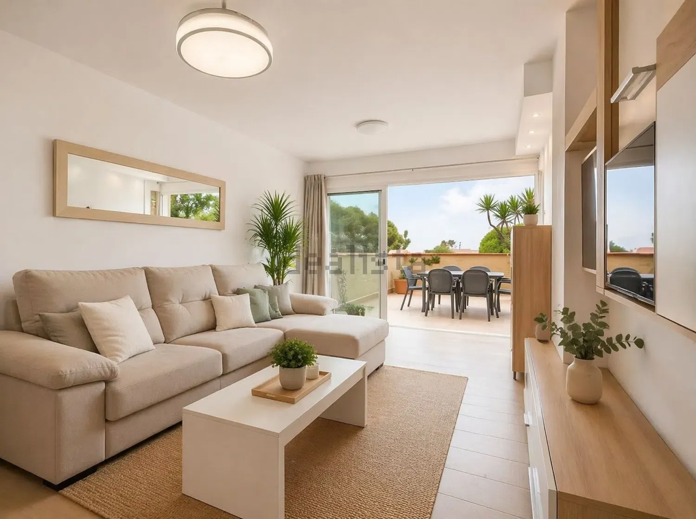
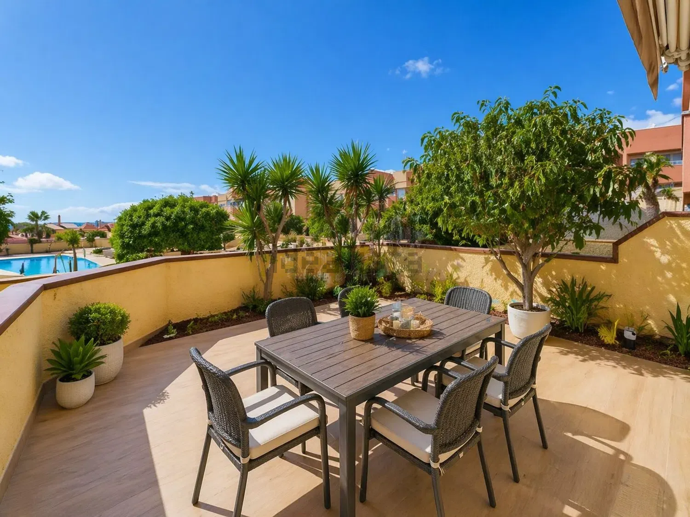
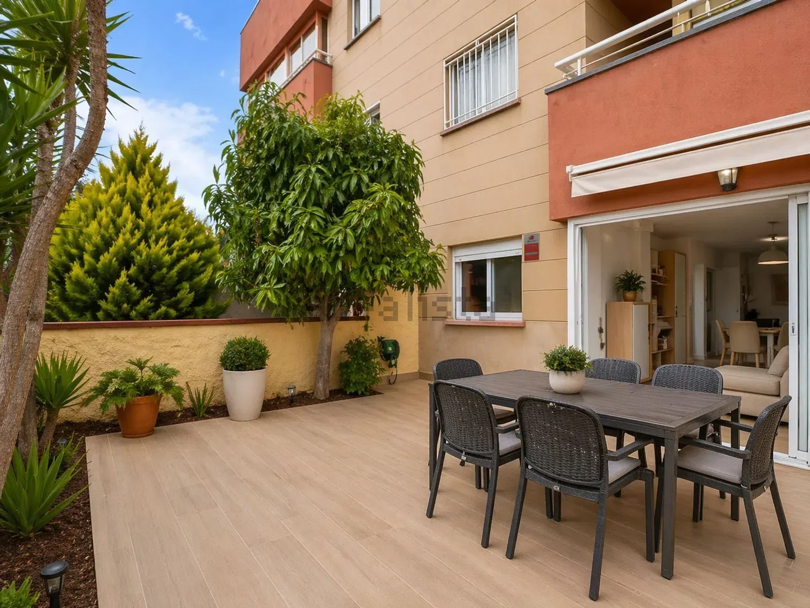
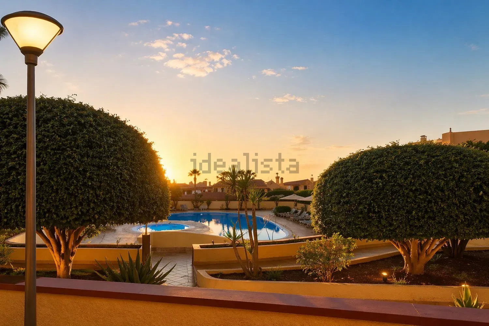
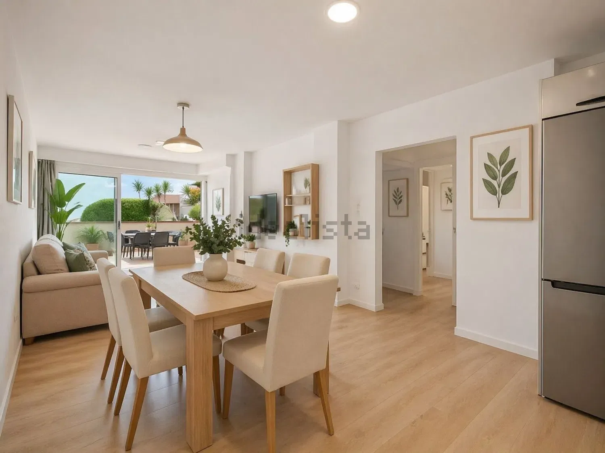

Apartamento reformado con terraza y vistas a la piscina
Torviscas Centro y Alto, Adeje





Residencial La Pineda, una de las zonas más cotizadas del sur.
Apartamento totalmente reformado en Costa Adeje con terraza de 15 m² y vistas a la piscina, ubicado en el conocido residencial La Pineda, una zona muy demandada tanto por su ubicación como por su entorno.
La vivienda ha sido totalmente reformada y ofrece una distribución muy cómoda y funcional: 2 habitaciones, 1 baño, una amplia cocina y un gran salón-comedor con muy buena sensación de espacio y luminosidad.
Uno de sus grandes atractivos es la terraza de 15 m² con vistas a la piscina, perfecta para disfrutar del clima de la zona o crear un espacio exterior para comer y descansar.
Excelente oportunidad como vivienda habitual, segunda residencia o inversión en una de las zonas más cotizadas del sur de Tenerife.
Características
Ficha técnica
- Superficie construida
- 88 m²
- Superficie útil
- 74 m²
- Dormitorios
- 2
- Baños
- 1
- Planta
- Bajo interior
- Ascensor
- Sí
- Orientación
- Oeste
- Año de construcción
- 1998
- Estado
- Segunda mano · buen estado
- Comunidad
- 86 €/mes
- Certificado energético
- Pendiente de etiqueta
- Referencia
- 111258127
Hablar de esta vivienda por WhatsApp ↗ Pedir información
Comprar casa en Torviscas Centro y Alto · Comprar casa en Adeje